Warnet Life Racikan Penyihir
Hai cinta, selamat datang di rumahku!
Mau racik resep apa hari ini?
Easter Egg
| 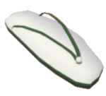 | >> v2.7 | ||||
| kotak rahasia + garam suci + sandal + kamera | → | Windah Casino | |||
>> v2.5 | |||||
| kotak rahasia + garam suci + sandal + mouse Gamer | → | Perempuan Hilang | |||
| 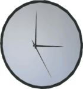 | >> v2.5 | ||||
| kotak rahasia + garam suci + sandal + jam | → | Aci Gamespot | |||
>> v2.5 | |||||
| kotak rahasia + garam suci + sandal + PC GG | → | Vote Rizad | |||
>> v2.10 | |||||
| kotak rahasia + garam suci + sandal + patung bomby | → | Rio Mascara | |||
| 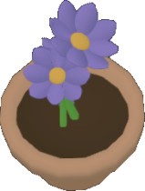 | >> v2.10 | 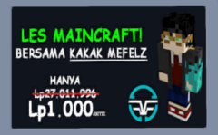 | |||
| kotak rahasia + garam suci + sandal + bunga ungu | → | Les Mefelz | |||
") | >> v2.11 | 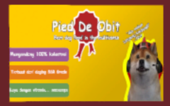 | |||
| kotak rahasia + garam suci + sandal + Monitor 4K | → | Pied De Obit | |||
>> v3.0 | 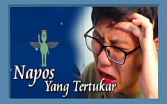 | ||||
| kotak rahasia + garam suci + sandal + tanaman alien | → | Sinetron Baru | |||
>> v3.0 | 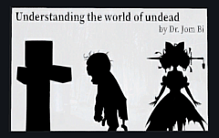 | ||||
| kotak rahasia + garam suci + sandal + kipas alien | → | Novel Baru | |||
>> v2.5 | |||||
| kotak rahasia + garam suci + sandal + mangkok legendaris | → | MiawAug Wibu music disc | |||
| 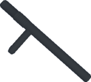 | >> v2.5 | ||||
| kotak rahasia + garam suci + sandal + pentungan | → | Kimi No Life music disc | |||
>> v2.7 | |||||
| kotak rahasia + garam suci + sandal + gelas biasa | → | gelas MiawAug | |||
>> v2.7 | 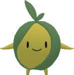 | ||||
| kotak rahasia + garam suci + sandal + gelas MiawAug | → | sokocha | |||
| 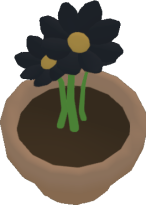 | >> v3.2 | 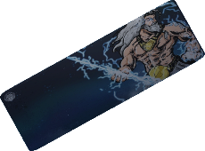 | |||
| bunga hitam + bunga hitam + bunga hitam + bunga hitam | → | @cyrosh.peripheral | |||
Tengkorak
| 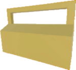 | >> v2.5 | ||||
| pentungan + kotak peralatan + sandal + garam suci | → | tengkorak | |||
>> v2.5 | |||||
| pentungan + kotak peralatan + kotak rahasia + jam | → | tengkorak merah | |||
>> v2.5 | |||||
| pentungan + kotak peralatan + sandal + jam | → | tengkorak biru | |||
>> v2.5 | |||||
| pentungan + kotak peralatan + mangkok legendaris + PC GG | → | tengkorak hijau | |||
>> v2.7 | |||||
| tengkorak + tengkorak merah + tengkorak hijau + tengkorak biru | → | tengkorak emas | |||
Painting
| >> v2.7 | ||||
| kotak rahasia + garam suci + Monitor 4K + PC GG | → | ??? | |||
>> v2.7 | |||||
| kotak rahasia + garam suci + toilet + toilet | → | ??? | |||
| 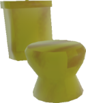 | >> v2.7 | ||||
| kotak rahasia + garam suci + toilet emas + toilet emas | → | ??? | |||
Witch's Stuffs
| 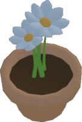 | >> v2.8 | 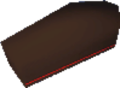 | |||
| peti mati + bunga ungu + bunga hitam + bunga putih | → | peti mati (meja) | |||
| 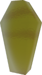 | >> v2.8 | 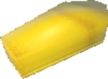 | |||
| peti mati emas + bunga ungu + bunga hitam + bunga putih | → | peti mati emas (meja) | |||
| 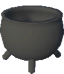 | 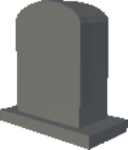 | >> v2.11 | 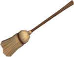 | ||
| peti mati + peti mati (meja) + kuali mini + batu nisan | → | sapu | |||